Store
Music
-
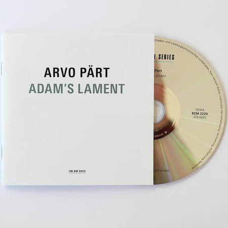
Adam's Lament
Adam's Lament
€ 15
Add to cartTrack list
- Adam's Lament 24:09
- Beatus Petronius 05:16
- Salve Regina 12:15
- Statuit not Dominus 04:57
- Alleluia-Tropus 02:39
- L'Abbé Agathon 14:04
- Estonian lullaby 02:08
- Christmas lullaby 02:27
- Format: 1 CD
- Publication year: 2012
- Publisher: ECM New Series - ECM 2225
- Booklet: 28 pages
- Duration: 67' 55"
-
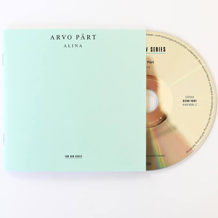
Alina
Alina
€ 15
Add to cartTrack list
- Mirror in the mirror 10:36
- Alina 10:47
- Mirror in the mirror 09:12
- Alina 10:53
- Mirror in the mirror 09:48
- Format: 1 CD
- Publication year: 1999
- Publisher: ECM Records - ECM 1591
- Booklet: 24 pages
- Duration: 51' 24"
-
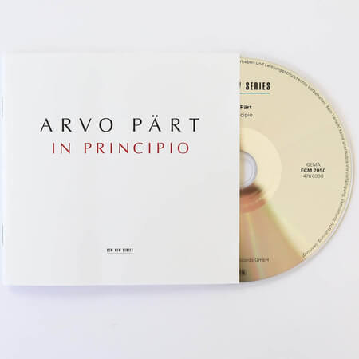
In Principio
In Principio
€ 15
Add to cartTrack list
- In principle 18:54
- I. Principles of Verbum 03:09
- II. Fuit homo missus a Deo 01:43
- III. Erat lux vera 07:15
- IV. Quotquot autem accepterunt sum 03:37
- V. Et Verbum caro factum est 03:50
- La Sindone 15:44
- Format: 1 CD
- Publication year: 2009
- Publisher: ECM New Series - ECM 2050
- Booklet: 28 pages
- Duration: 70' 57"
-
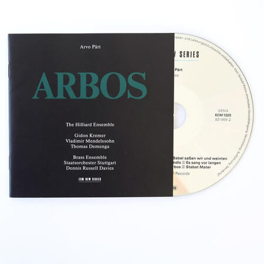
Arbos
Arbos
€ 15
Add to cartTrack list
- Arbos 02:29
- An den Wassern zu Babel 06:34
- Pair interval 05:47
- De profundis 06:52
- This is the case with Jahren 05:54
- Sum 05:19
- Stabat Mater 23:54
- Format: 1 CD
- Publication year: 1987
- Publisher: ECM New Series - ECM 1325
- Booklet: 24 pages
- Duration: 59' 18"
-
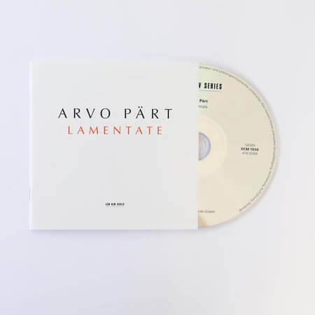
Lamentate
Lamentate
€ 15
Add to cartTrack list
- Lamentate 37:04
- Minacciando 02:38
- Spietato 03:33
- Fragile 1:04
- Pregando 05:59
- Soltudine - stato d'animo 05:25
- Consolante 01:21
- Stridendo 01:31
- Lamentabile 05:46
- Resolution 02:45
- Fragile e conciliante 06:56
- Format: 1 CD
- Publication year: 2005
- Publisher: ECM New Series - ECM 1930
- Booklet: 20 pages
- Duration: 42' 44"
-
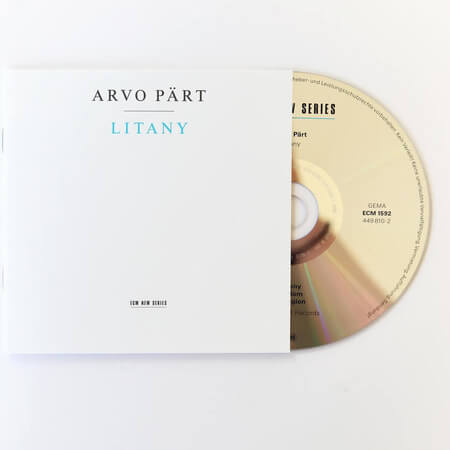
Litany
Litany
€ 15
Add to cartTrack list
- Litany 22:45
- Psalms 06:45
- Trisagiom 11:53
- Format: 1 CD
- Publication year: 1996
- Publisher: ECM New Series - ECM 1592
- Booklet: 8 pages
- Duration: 42' 23"
-
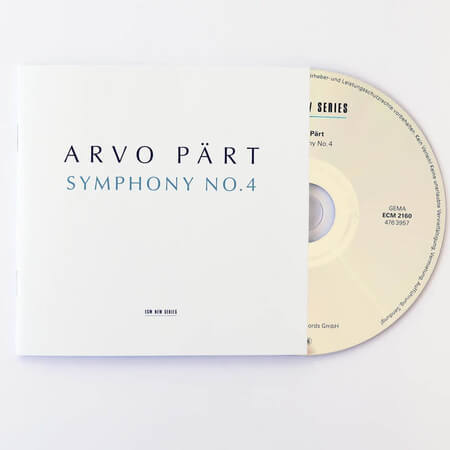
Symphony No. 4
Symphony No. 4
€ 15
Add to cartTrack list
- Symphony No. 4 "Los Angeles" 35:09
- Con sublimità 12:04
- Affannoso 14:12
- Deciso 08:45
- Excerpts from the work "Kanon pokajanen 14:50
- Format: 1 CD
- Publication year: 2010
- Publisher: ECM New Series - ECM 2160
- Booklet: 16 pages
- Duration: 49' 56"
-
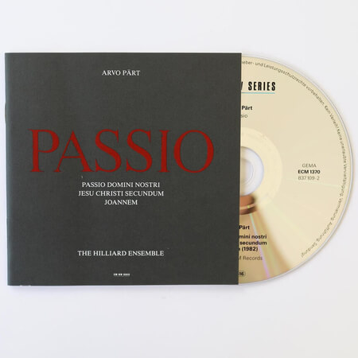
Passio
Passio
€ 15
Add to cartTrack list
- Passio Domini nostri Jesu Christi secundum Joannem 70:52
- Format: 1 CD
- Publication year: 1988
- Publisher: ECM New Series - ECM 1370
- Booklet: 24 pages
- Duration: 70' 52"
-
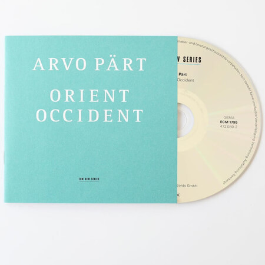
Orient & Occident
Orient & Occident
€ 15
Add to cartTrack list
- Ein Wallfahrtslied / Pilgrims' Song 08:49
- Orient & Occident 07:05
- Como cierva sedienta:
- I 07:16
- II 4:09
- III 05:36
- IV 03:27
- V 10:53
- Format: 1 CD
- Publication year: 2002
- Publisher: ECM New Series - ECM 1975
- Booklet: 24 pages
- Duration: 47' 26"
Books
-
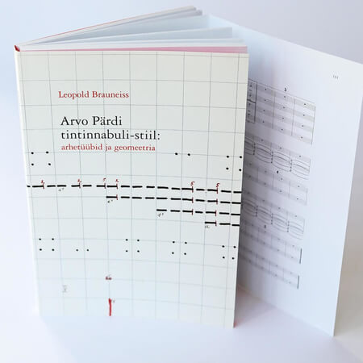
Arvo Pärt’s tintinnabuli style
Arvo Pärt’s tintinnabuli style: archetypes and geometry
€ 19
Add to cartThe collection of articles by the Austrian musicologist Leopold Brauneiss "Arvo Pärt's tintinnabuli style: archetypes and geometry" is by far the most thorough and in-depth treatment of Arvo Pärt's special composition technique in the world. Researchers have tried to move deeper than the surface by describing and analyzing various aspects of the tintinnabula style, and the greatest work in this area has been done by the Austrian musicologist Leopold Brauneiss.
- Compiler: Saale Kareda
- Publisher: Arvo Pärt Center
- Publication year: 2017
- Language: Estonian
- Pages: 224
-
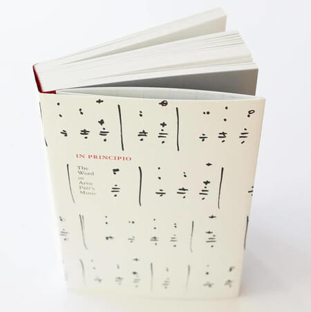
In principio. The Word in Arvo Pärt’s Music
In principio. The Word in Arvo Pärt’s Music
€ 20
Add to cart“In principle. The Word in Arvo Pärt's Music "sheds light on one very important aspect of Pärt's work - the texts of the composer's works, the choice of texts and the Word in its broader but also deeper meaning. Between the covers of the book, the reader will find the texts of 81 works in a total of nine languages and their translations into English. The works are arranged chronologically, covering Pärt's nearly 60-year creative path.
- Editor: Hedi Rosma
- Publisher: Arvo Pärt Center
- Publication year: 2015
- Language: Estonian
- Pages: 392
-
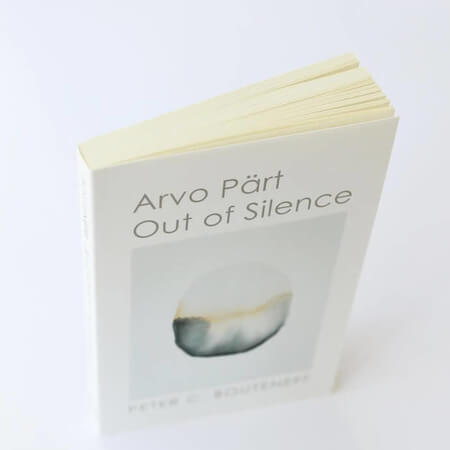
Arvo Pärt: Out of Silence
Arvo Pärt: Out of Silence
€ 20
Add to cartPeter Bouteneff's book "Out of Silence" is the first extensive discussion of the connections between Arvo Pärt's music and the Orthodox tradition, and as such is certainly an important addition to Pärt's research to date. As a professor of theology and a connoisseur of Pärt's music, Bouteneff reflects on concepts such as spirituality and religiosity, time and timelessness in Pärt's works, and discusses the reasons for the great popularity and profound influence of Pärt's music.
- Author: Peter Bouteneff
- Publication year: 2015
- Publisher: St. Vladimir's Seminary Press
- Language: English
- Pages: 231
-
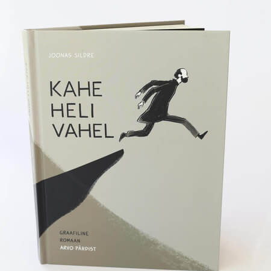
Between two sounds
Between two sounds - Graphic novel about Arvo Pärt
€ 20
Add to cartJoonas Sildre's graphic novel "Between Two Sounds" tells the story of Arvo Pärt's musical search from his childhood until 1980, when the composer's family was forced to leave Estonia. Illustrator and comic artist Joonas Sildre has delved deeply into the composer's biographical and creative history, carefully studying many archival sources and being able to pour biographical material into a very vivid artistic form.
- Text and illustrations: Joonas Sildre
- Publication year: 2018
- Publisher: Arvo Pärt Center
- Language: Estonian
- Pages: 222
-
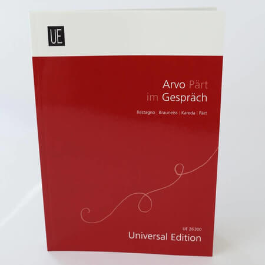
Arvo Pärt im Gespräch
Arvo Pärt im Gespräch
€ 25
Add to cartThe book is an introduction to Arvo Pärt's work and world of thought. In a conversation with Italian musicologist Enzo Restagno, Arvo Pärt shares his thoughts on life in Soviet Estonia, emigration, his creative search and music. Austrian musicologist Leopold Brauneiss discusses Arvo Pärt's composition technique tintinnabuli style. Saale Kareda writes about the spiritual background of Arvo Pärt's music. The book contains two speeches by Arvo Pärt on receiving international awards.
- Designer: Ingrid Zuckerstätter
- Publication year: 2010
- Publisher: Universal Edition AG
- Language: German
- Pages: 169
-

Arvo Pärt's Tabula Rasa
Arvo Pärt's Tabula Rasa
€ 20
Add to cartArvo Pärt's Tabula Rasa , published in 2017, opened a new Oxford Keynotes Series for Oxford University Press. The series specializes in opening up the cultural contexts of individual works, and the author of the book, Kevin C. Karnes, is also the curator of the series. The book is not only intended for a narrow circle of musicologists, but for a wider readership interested in the humanities. Kevin C. Karnes, a professor of music history at the University of Atlanta Emory, has in recent years been deeply researching Arvo Pärt's work, working extensively with the archive materials of the center.
- Author: Kevin C. Karnes
- Publication year: 2017
- Publisher: Oxford University Press
- Language: English
- Pages: 135
Sheet Music
-
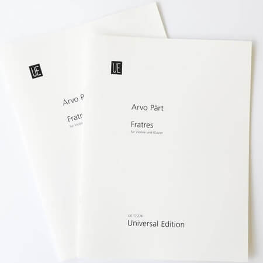
Fratres (1977)
Fratres
€ 22
Add to cart"Fratres" is one of the works that exploded in 1977 after recognizing the world of thought inherent in tintinnabuli music. Originally, "Fratres" saw the light of day as a three-part music, and it did not have a specific performance, but it could be played with various instruments. But "Fratres" also exists as a piece of music with variations of a solo instrument. The first of these, created for violin and piano, was completed in 1980. The technically demanding solo instrumental part of the work has been added as a new layer to the recurring three-part theme, further emphasizing the changing and constant contrast between them. At present, the catalog of Arvo Pärt's works contains many versions of both "Fratres" for very different ensembles.
-
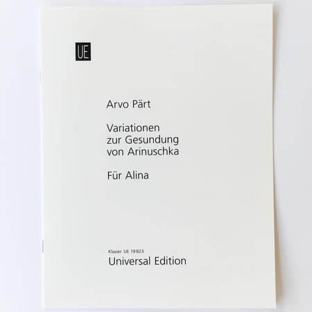
Für Alina (1976)
Für Alina
€ 10
Add to cart"Aliinale" ("Für Alina") is Arvo Pärt's first tintinnabuli work, which was born on a sunny winter day in 1976 after many years of creative search. This miniature piano piece has been used in many films, as well as in the musical design of various theater and dance productions. In addition to "Für Alina", there is another piece of piano between the covers - "Variationsen zur Gesundung von Arinuschka" ("Variationsen zur Gesundung von Arinuschka"), which the composer wrote to his daughter Ariina in 1977.
-
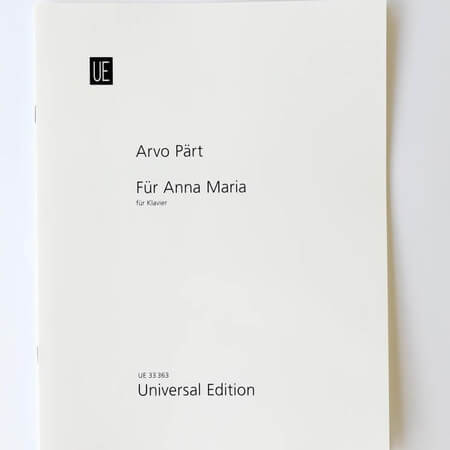
Für Anna Maria (2006)
Für Anna Maria
€ 7
Add to cartOnce upon a time there lived a little seven-year-old girl Anna Maria, who dreamed of a special gift. He ordered a piano piece from Arvo Pärt for his 10th birthday. And his wish came true! Depending on the mood, the work can be performed in two ways - cheerfully (fröhlich) or thoughtfully (nachdenklich).
-
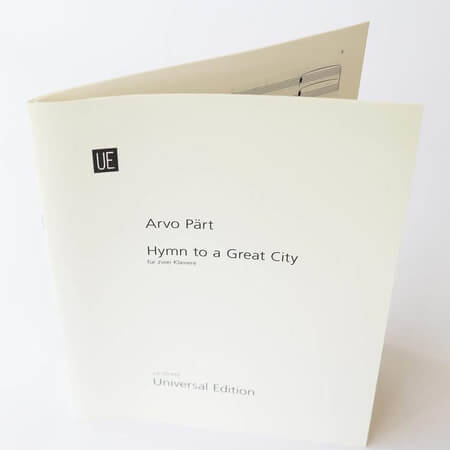
Hymn to a Great City (1984/2004)
Hymn to a Great City
€ 19
Add to cartThe work for two pianos, born in 1984, is the only one of its kind in the composer's work, but all the more special. The composition, the melody and also the traces of the tintinnabuli can be found in this work only in hints, in a hidden form. It's like a secret city that anyone can go to…
-
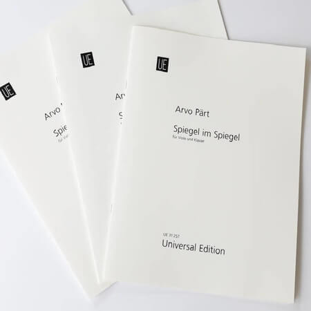
Spiegel im Spiegel (1978)
Spiegel im Spiegel
€ 18
Add to cart"Mirror in the Mirror" is one of the most beloved and most performed works in Arvo Pärt's work, as well as one of the last works that Arvo Pärt completed before leaving Estonia. However, this seemingly simple song requires maximum concentration and childlike sincerity from the performer, so that the sounds bloom beautifully during the performance. The music of the work has been used in many ballet and dance performances, as well as in various films and productions. Both the composer himself and the performers have made many versions of the work "Mirror in the Mirror" for different ensembles.
-
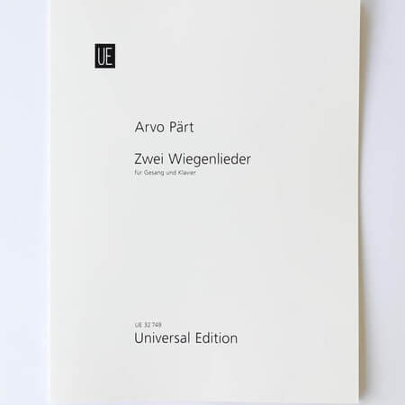
Zwei Wiegenlieder (2002)
Zwei Wiegenlieder
€ 13
Add to cartTimeless and gentle lullabies for female voices and piano. The first of them, "Estonian Lullaby" based on the Jõhvi folk tune, is a traditional proverb created for two female voices. The text of the second, "The Lullaby" ("Рождественская колыбельная"), is from the Gospel of Luke (2: 7), carrying the bright message of the birth of the Child Jesus.
Films
-
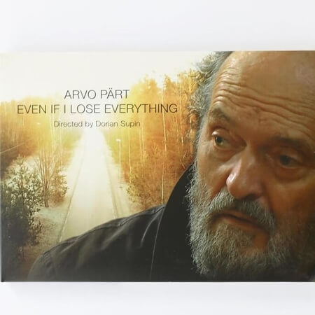
Arvo Pärt - Even if I lose everything
Even if I lose everything
€ 17
Add to cart"Arvo Pärt - even if I lose everything" is an intimate and sensitive portrait film that shows Arvo Pärt as a composer, wife, father and grandfather in his home environment. The title "Even if I lose everything" refers to an entry in Arvo Pärt's musical workbook, which the composer browses with Immo Mihkelson in the film. Reflections and recollections pushed from the notes written in these notebooks alongside home scenes reveal the composer's philosophy of life and creativity, painting a personal and in-depth picture of Arvo Pärt. The film features excerpts from many of Arvo Pärt's works.
- Audio format: Stereo
- Image format: 16: 9
- Video format: PAL or NTSC
- Duration: 90 min
- Published: 2016
-
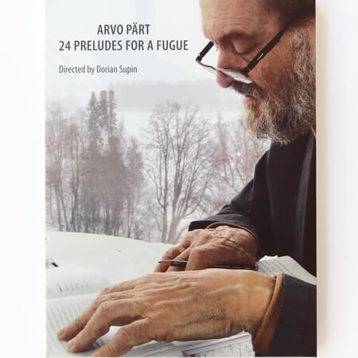
Arvo Pärt. 24 Preludes for a Fugue
24 Preludes for a Fugue
€ 17
Add to cart"Arvo Pärt. 24 Preludes to a Fugue ”is the first documentary to be released on DVD about Arvo Pärt, which opens the door to the inner world of one of the most spiritually intense composers of our time. The mosaic portrait contains moments of the composer's life filmed over three years, including rehearsals, premieres, seminars, meetings and memories. The portrait film, completed in 2002 at the film studio F-Seitse, is now available on DVD in a new package and with a 16-page booklet containing the biography, discography and photographs of composer Arvo Pärt.
- Audio format: Dolby Stereo
- Image format: 4: 3
- Duration: 86 min
- Published: 2002 / DVD 2014
-
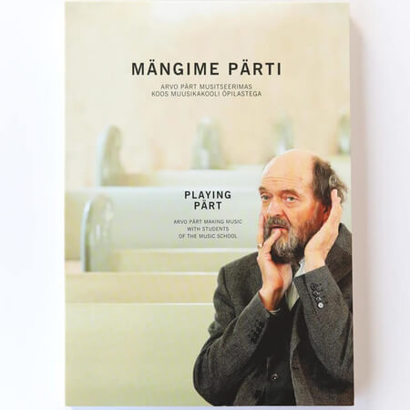
Playing Pärt
Playing Pärt
€ 20
Add to cartIn the spring and winter of 2011, at the invitation of the Old Town Education College, Arvo Pärt participated in the preparation of the maestro's author's concert, instructing young musicians from kindergarten to high school. Director Dorian Supin and Studio Minor Film captured the whole process - rehearsal and concert - and it resulted in a DVD set consisting of two discs: a DVD “Trying Pärt” (201 min) and a DVD “Playing Pärt” (75 min) min). In addition to the samples, the DVD "Trying Pärt" also contains Arvo and Nora Pärt's conversation "Very simple and inexplicable".
- Audio format: Dolby Stereo
- Image format: 16: 9
- Duration: 276 min
- Published: 2012